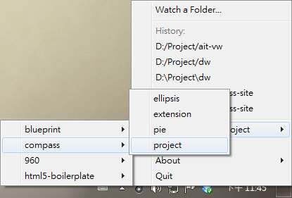
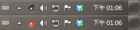
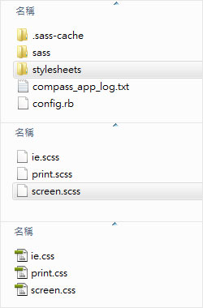

Sass 語法是種可延伸的 CSS，讓撰寫 CSS 時能更有彈性也更有效率。Compass 則是將 Sass 包含在內，同時再納入許多 Framework 與相關功能讓網頁設計人員快速與簡便再加倍，然而 Compass 是一套需要 Ruby 環境以及依靠指令的工具，這對前端設計師頗具門檻，為了能跨平台並介紹給更多設計師使用，和多將 Compass 包成一套桌面應用程式，讓所有設計師都能輕易體驗這種輕鬆寫 code 的快感。
你可以在 Compass.app 網站購買並下載本桌面軟體，或是透過幫助找到你可能遇到的問題。
Compass.app 延伸應用原理用的是 Sass，用 Dreamweaver 寫 css 的話最好先修改 MMDocumentTypes.xml 好讓 Dreamweaver 看的懂 Sass。以下是 Adobe CS4 的路徑
"C:\Program Files\Adobe\Adobe Dreamweaver CS4\configuration\DocumentTypes"
參考來源: LESS/SCSS Syntax Highlighting in Dreamweaver
檔案下載回來解壓縮後放置在任何你想要的位置，Compass.app 並不需要進行安裝動作，每次執行只要點擊 compass-app.exe 即可啟動。
啟動後在工具列可看見小圖示，點 compass 小圖來建立專案資料夾

此時 Compass.app 會建立應用的相關檔案並 Watching 此資料夾，Watching 的用意在於針對此資料夾的 scss 檔案進行 compile 成為 css，而 scss 就是日後編輯練功之地。

進行 Watching 時 icon 會變色
進行到一半的專案也可以使用 compass.app，只要複製一份 .sass-cache 與 sass 到該專案資料夾中再進行 Watching 即可，這時 Compass.app 會自動生一份 compass_app_log.txt 對該專案進行動作的紀錄，在 Compass.app 選單的 History 也會出現該專案的名稱，但記得要將專案原本的 css 先更名保留一份（例如原本的 screen.css 先更名為 _screen.css），這樣 css 名稱與 sass 同名時才不會被覆蓋。

編輯 screen.scss 存檔後 Compass.app 就會自動生出 screen.css 供網頁使用
為了避免每次開新專案都要做一次個人習慣的前置作業環境，因此日後比較了解 Compass.app 後可以先建立個人的 folder，新專案開始只要複製一份進行 Watching 就可以開工了。
因為 sass 與 css 的程式碼行數並不對應，用 Firebug 查問題不太方便，裝了 Firesass 後就可以直接觀看 sass 原始碼找問題。
Sass 網站有一些範例可參考，還可以對照一下同樣的風格用 sass 與 css 差別在哪裡，而 Compass 網站也有許多文件與範例，或是在這直接看幾個基本的快速入門。
Compass 提供了許多強大的框架，需要時在 scss 裡 @import 後再 @include 進 style 即可
@import "compass/reset";
@import "compass/css3";
button {
@include border-radius(10px);
@include box-shadow(rgba(0,0,0,0.5), 0 ,10px, 20px);
}
除了可快速套用之外，css3 方面 Compass 會自動生出對應的程式碼（-moz, -webkit, -o）符合所有瀏覽器使用，當然 IE9 之前的版本 除外。
至於要載入哪些框架全憑個人需求，Core Framework 分為幾大類，之下還有許多小分類，偷懶的可以直接 @import "compass"; 通包。另外 Compass 還提供 Blueprint，詳細內容可參閱 Compass Blueprint Module。
這應是最大特色了，巢狀結構好處是不需贅述父層名稱，讓層級複雜的結構一目瞭然直通到底。
#header {
margin-bottom: 50px;
h1 {
font-size: 24px;
color: red;
a { display: block; }
}
ul.nav {
@include clearfix;
li { float:left; }
}
}
另外對於偽元素也可以直接用“&”符號來取代原本的選擇器名稱
a {
color: #000;
text-decoration: none;
&:visited {
color: #red;
}
&:hover, &:active {
text-decoration: underline;
}
}
關於 “&” 的用法 hlb 還教了一個好用小技巧，因為 & = 自己，所以在 ie hack 中可以這樣寫
ul li {
background: url(transparent.png);
.ie6 & {
background: #ff0000;
}
}
ie6 不支援 png 透明圖，所以 hack 直接給背景色。另外提供一個用 sass 寫的垂直置中 demo。
Sass 提供的許多函數。雖然 hlb 有大概跟我解釋了一下這部分在色彩上的妙用，但個人覺得實用的部分還是在於可一次定義網頁中的通用或標準色，或是區塊通用間距之類的，尤其在大型專案中會是管理色彩的好幫手。
$cis: #f90;
$margin: 20px;
#header {
background: $cis;
}
a, h1, h2, h3, h4, h5 {
color: $cis;
}
.section {
padding: $margin / 2;
margin-bottom: $margin;
}
假設企業標準色是橘色 #f90，在 header 背景色、連結、標題甚至其它地方都希望沿用，那用 "$" 定義後即可大量套用在所有希望使用該色碼的地方，如果企業突然決定改用其它顏色也不用麻煩的一個一個修改。
而 margin、padding 也可以用這種方式定義。原始碼中 “padding: $margin / 2;” 等於 20px 的 1/2 = 10px，有趣吧，只是不確定有沒有機會真的用到 XD
相當好用可以多多益善的功能，運用得當可以省下許多工
.main {
border: 1px #000;
background: #eee;
}
.main.article {
font-size: 13px;
color: #333;
}
.sidebar {
@extend .main;
background: #fff;
}
運用 @extend 的方式將某一寫好的樣式直接套用進另外一組選擇器中使用，以上 scss 就會生出
.main, .sidebar {
border: 1px #000;
background: #eee;
}
.main.article, .sidebar.article {
font-size: 13px;
color: #333;
}
.sidebar {
background: #fff;
}
@extend 好處是很多面的，個中滋味值得細細品嘗，在這就不一一贅述 :P
Mixins 根據介紹功能有點類似變數，同樣是為了方便管理，但可定義的範圍更廣，使用方法是定義好之後再用 @include 的方式載入
@mixin rounded-top {
$side: top;
$radius: 10px;
border-#{$side}-radius: $radius;
-moz-border-radius-#{$side}: $radius;
-webkit-border-#{$side}-radius: $radius;
}
#navbar li { @include rounded-top; }
#footer { @include rounded-top; }
這是 Sass 官方的範例，宣告 @mixin 後加進變數再套進圓角框，需要的再 @include 載入使用。除此之外還有更多種用法，不過看來得詳讀文件 Sass Documentation 後才能深入的靈活運用。